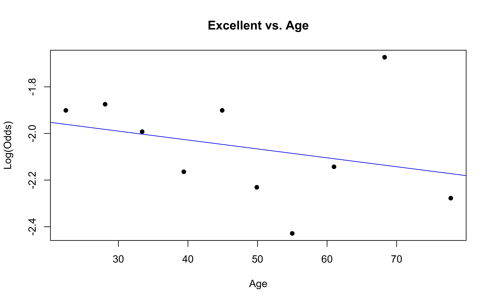
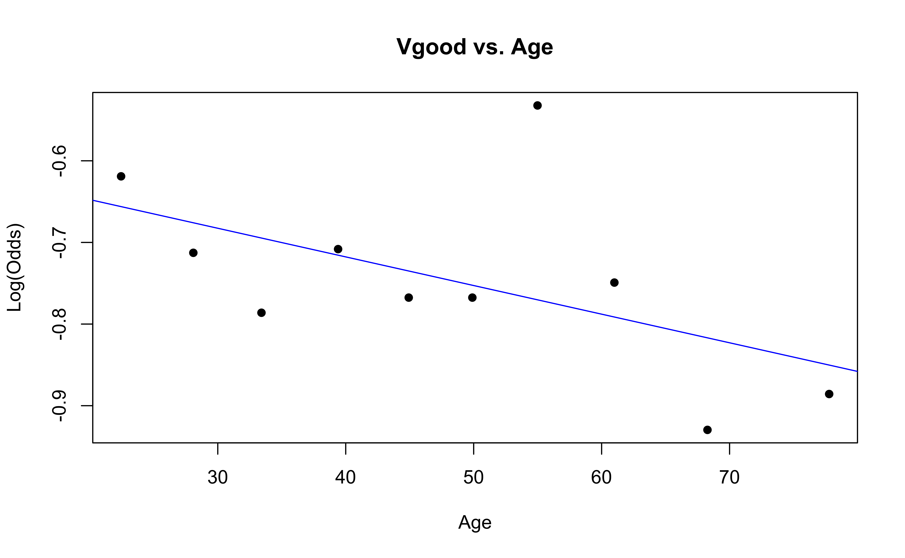

Multinomial logistic regression
Part 2
Apr 08, 2025
Announcements
HW 04 due TODAY at 11:59pm
Team Feedback (email from TEAMMATES) due Tuesday, April 8 at 11:59pm (check email)
Exam 02 - April 17
Next project milestone: Draft and peer review in April 21 lab
Statistics experience due April 15
Topics
- Predictions
- Model selection
- Checking conditions
Computational setup
NHANES Data
- National Health and Nutrition Examination Survey is conducted by the National Center for Health Statistics (NCHS).
- The goal is to “assess the health and nutritional status of adults and children in the United States”.
- This survey includes an interview and a physical examination.
Variables
Goal: Use a person’s age and whether they do regular physical activity to predict their self-reported health rating.
Outcome:
HealthGen: Self-reported rating of participant’s health in general. Excellent, Vgood, Good, Fair, or Poor.Predictors:
Age: Age at time of screening (in years). Participants 80 or older were recorded as 80.PhysActive: Participant does moderate to vigorous-intensity sports, fitness or recreational activities.
The data
Rows: 6,465
Columns: 5
$ HealthGen <fct> Good, Good, Good, Good, Vgood, Vgood, Vgood, Vgood, Vgood, …
$ Age <int> 34, 34, 34, 49, 45, 45, 45, 66, 58, 54, 50, 33, 60, 56, 56,…
$ PhysActive <fct> No, No, No, No, Yes, Yes, Yes, Yes, Yes, Yes, Yes, No, No, …
$ Education <fct> High School, High School, High School, Some College, Colleg…
$ obs_num <int> 1, 2, 3, 4, 5, 6, 7, 8, 9, 10, 11, 12, 13, 14, 15, 16, 17, …Model in R
Model summary
| y.level | term | estimate | std.error | statistic | p.value |
|---|---|---|---|---|---|
| Vgood | (Intercept) | 1.265 | 0.154 | 8.235 | 0.000 |
| Vgood | Age | 0.000 | 0.003 | -0.014 | 0.989 |
| Vgood | PhysActiveYes | -0.332 | 0.095 | -3.496 | 0.000 |
| Good | (Intercept) | 1.989 | 0.150 | 13.285 | 0.000 |
| Good | Age | -0.003 | 0.003 | -1.187 | 0.235 |
| Good | PhysActiveYes | -1.011 | 0.092 | -10.979 | 0.000 |
| Fair | (Intercept) | 1.033 | 0.174 | 5.938 | 0.000 |
| Fair | Age | 0.001 | 0.003 | 0.373 | 0.709 |
| Fair | PhysActiveYes | -1.662 | 0.109 | -15.190 | 0.000 |
| Poor | (Intercept) | -1.338 | 0.299 | -4.475 | 0.000 |
| Poor | Age | 0.019 | 0.005 | 3.827 | 0.000 |
| Poor | PhysActiveYes | -2.670 | 0.236 | -11.308 | 0.000 |
Predictions
Calculating probabilities
Suppose the response variable has \(K\) categories and \(k = 1\) is the baseline category. For categories \(2,\ldots,K\), the probability that the \(i^{th}\) observation is in the \(j^{th}\) category is
\[ \hat{\pi}_{ij} = \frac{\exp\{\hat{\beta}_{0j} + \hat{\beta}_{1j}x_{i1} + \dots + \hat{\beta}_{pj}x_{ip}\}}{1 + \sum\limits_{k=2}^K \exp\{\hat{\beta}_{0k} + \hat{\beta}_{1k}x_{i1} + \dots \hat{\beta}_{pk}x_{ip}\}} \]
For the baseline category, \(k=1\), we calculate the probability \(\hat{\pi}_{i1}\) as
\[ \hat{\pi}_{i1} = 1- \sum\limits_{k=2}^K \hat{\pi}_{ik} \]
Predicted probability
# A tibble: 10 × 7
Age PhysActive Excellent Vgood Good Fair Poor
<int> <fct> <dbl> <dbl> <dbl> <dbl> <dbl>
1 20 Yes 0.151 0.384 0.378 0.0824 0.00404
2 26 No 0.0684 0.242 0.462 0.198 0.0297
3 57 No 0.0691 0.244 0.425 0.207 0.0546
4 56 Yes 0.156 0.397 0.350 0.0887 0.00837
5 38 Yes 0.154 0.391 0.364 0.0855 0.00582
6 52 Yes 0.156 0.395 0.353 0.0880 0.00773
7 22 Yes 0.151 0.385 0.377 0.0827 0.00421
8 52 Yes 0.156 0.395 0.353 0.0880 0.00773
9 22 No 0.0682 0.242 0.466 0.196 0.0274
10 32 Yes 0.153 0.389 0.369 0.0845 0.00516Actual vs. predicted health rating
For each observation, the predicted perceived health rating is the category with the highest predicted probability.
Confusion matrix
Actual vs. predicted health rating
Why do you think no observations were predicted to have a rating of “Excellent”, “Fair”, or “Poor”?


ROC curves
ROC curves for multiclass outcomes use a one-vs-all approach: calculate multiple curves, one per level vs. all other levels.
Area Under the Curve (AUC)
Application exercise
Checking conditions for inference
Conditions for inference
We want to check the following conditions for inference for the multinomial logistic regression model:
Linearity: Is there a linear relationship between the log-odds and the predictor variables?
Randomness: Was the sample randomly selected? Or can we reasonably treat it as random?
Independence: Are the observations independent?
Checking linearity
Similar to logistic regression, we will check linearity by examining empirical logit plots between each level of the response and the quantitative predictor variables.
nhanes_adult <- nhanes_adult |>
mutate(
Excellent = factor(if_else(HealthGen == "Excellent", "1", "0")),
Vgood = factor(if_else(HealthGen == "Vgood", "1", "0")),
Good = factor(if_else(HealthGen == "Good", "1", "0")),
Fair = factor(if_else(HealthGen == "Fair", "1", "0")),
Poor = factor(if_else(HealthGen == "Poor", "1", "0"))
)Checking linearity
emplogitplot1(Excellent ~ Age, data = nhanes_adult,
ngroups = 10, main = "Excellent vs. Age")
emplogitplot1(Vgood ~ Age, data = nhanes_adult,
ngroups = 10, main = "Vgood vs. Age")

Checking linearity
emplogitplot1(Good ~ Age, data = nhanes_adult,
ngroups = 10, main = "Good vs. Age")
emplogitplot1(Fair ~ Age, data = nhanes_adult,
ngroups = 10, main = "Fair vs. Age")

Checking linearity

✅ The linearity condition is satisfied. There is generally a linear relationship between the empirical logit and the quantitative predictor variable, Age, for each level of the response.
Checking randomness
We can check the randomness condition based on the context of the data and how the observations were collected.
Was the sample randomly selected?
If the sample was not randomly selected, ask whether there is reason to believe the observations in the sample differ systematically from the population of interest.
✅ The randomness condition is satisfied. The participants were randomly selected, and thus we do not have reason to believe that the participants in this study differ systematically from adults in the U.S.
Checking independence
We can check the independence condition based on the context of the data and how the observations were collected.
Independence is most often violated if the data were collected over time or there is a strong spatial relationship between the observations.
✅ The independence condition is satisfied. The participants were randomly selected, so it is reasonable to conclude that the participants’ health and behavior characteristics are independent of one another.
Recap
- Predictions
- Model selection for inference
- Checking conditions for inference